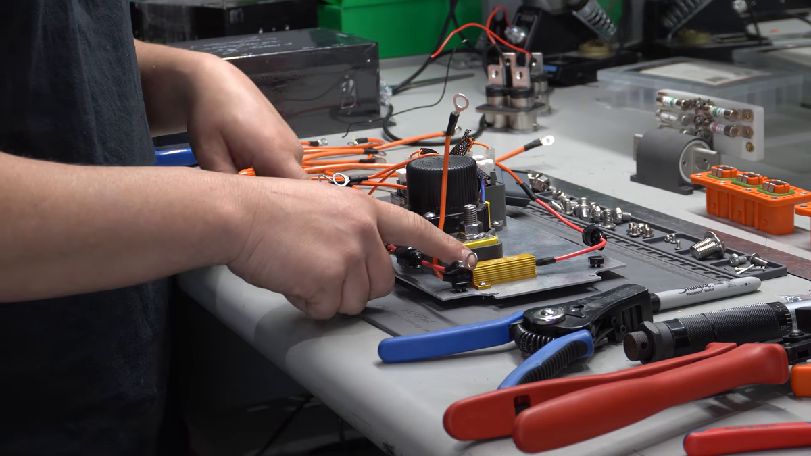
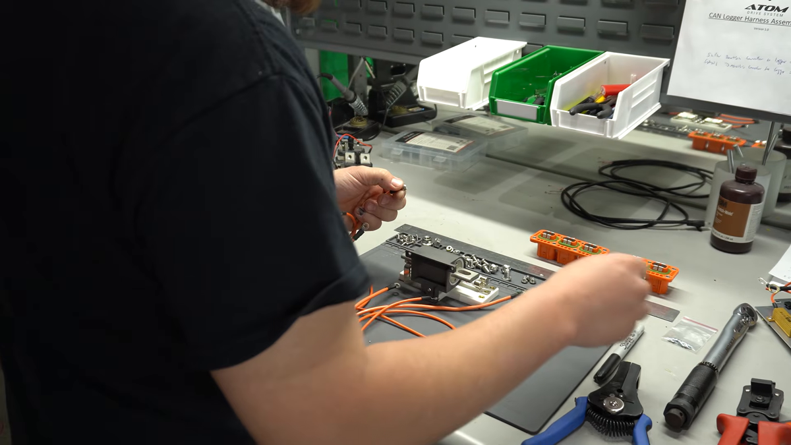
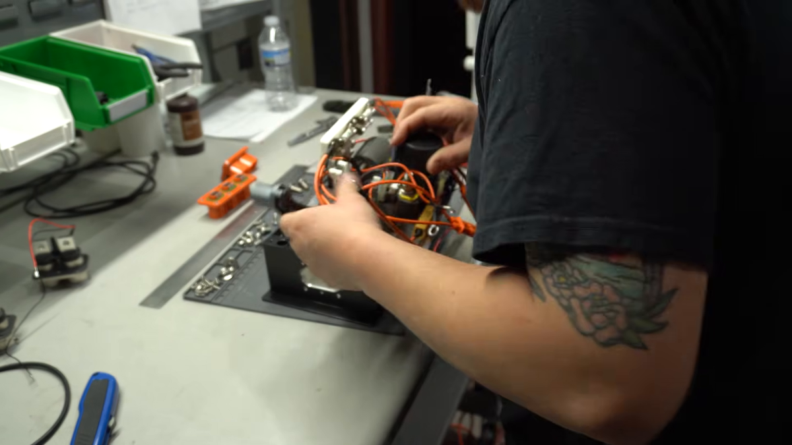
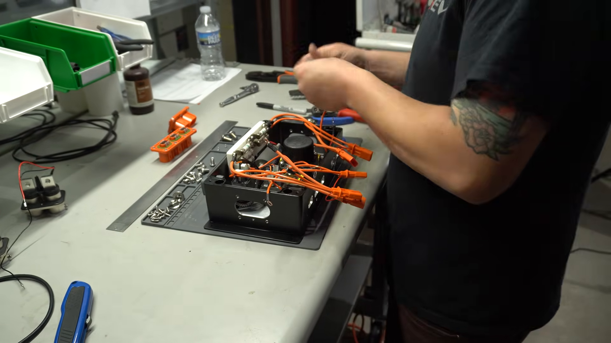
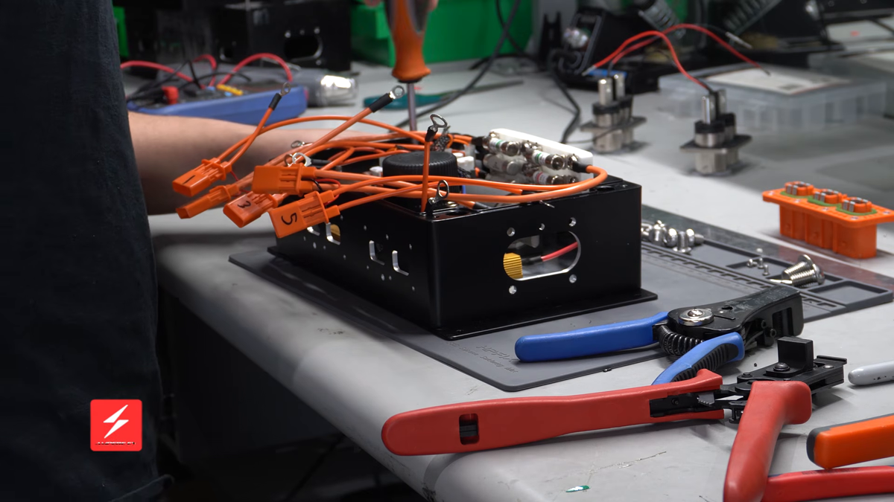
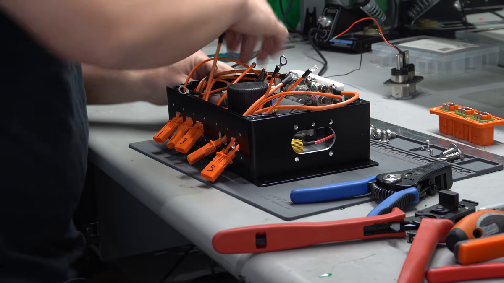

公開組立映像で見る、筐体の外と内の作業
筐体外で下板側・補機ヒューズ板側を組み、まとめて搭載した後にも内部作業が残ります。下の6場面から、現在の工程表と部品群の図へ対応を追えます。
外：下板側・補機ヒューズ板側0:24 / 0:50 — 台上で別々に扱う
外 → 内：まとめて搭載2:26 — 板同士の実物固定具は見えない
搭載後：工具作業・端末引出し2:34 / 2:38 / 2:50 — 未接続端が残る
「まとめて搭載」と「板同士の締結完了」は別です。D30/D31の板合わせ・持ち替えは、現在採用している仮手順です。映像では固定作業・固定具が隠れており、その締結位置や支持方法までは定まりません。D42も工具対象を未特定のまま残しています。
出典：Ampere EV「ASSEMBLY! EV High Voltage Junction Box」（2025-06-07）。完成写真のモデルと同一製造版であることは未確認です。3ST分担・ロボットの台数はライン案であり、この手作業映像がその構成を実証しているわけではありません。
画像を選ぶと番号のない縮小元画像が開きます。番号は把持点・加工位置ではありません。
0:24 · 下板と別置きのヒューズ板

- 1 下板の見えている縁。筐体底面ではない。
- 2 右奥に別置きされたヒューズ板。
画像・映像の既存観察
接触器・リレー・金色の抵抗等が載る金属の下板が筐体外にある。ヒューズ板は右奥に別置き。下板の手前の縁、切欠き、穴の一部が見える。
この場面で決まらないこと
手や部品に隠れる輪郭、板厚、穴径、裏面支持は読めない。印は画像上の対象位置で、加工輪郭・把持点ではない。
公式映像のこの時刻を開く
0:50 · ヒューズ板側の外組み

画像・映像の既存観察
筐体外でヒューズ板側の配線端末を扱っている。
この場面で決まらないこと
下板との機械結合、線ごとの遠端と共締め積層はこの場面から確定しない。
公式映像のこの時刻を開く
2:26 · 二つの板側を一緒に搭載

- 1 ユニットと一緒に運ばれるヒューズ板。
- 2 同じ搬送中の下板側部品。板の縁・把持位置は遮蔽。
- 3 受け側の筐体。可搬下板とは別の物。
- 4 別置きの外側ヘッダー。
画像・映像の既存観察
白いヒューズ板と接触器・リレー等の下板側が一緒に持たれ、筐体へ入る。外側ヘッダーは台上にある。
この場面で決まらないこと
板同士の固定作業・固定具は映っていない。同時搬送の観察を剛結・締結完了の判定にしない。手に隠れた下板の全形状も不明。
公式映像のこの時刻を開く
2:34 · 搭載後も自由端が残る

- 1 上縁から外へ出る内側ハウジング付き自由端。
- 2 未接続の丸端子。
- 3 外側ヘッダーは台上に残る。
画像・映像の既存観察
両板側の部品が筐体内にある。内側ハウジングと丸端子付きの未接続端が筐体の外へ出ている。外側ヘッダーは別置き。
この場面で決まらないこと
下板の全固定完了、端末の全数・所属・支持方法は確定しない。
公式映像のこの時刻を開く
2:38 · 搭載後の箱内工具作業

- 1 ドライバー軸。作業点は部品・配線で遮蔽。
- 2 複数の内側ハウジング自由端。
- 3 丸端子付き自由端。
画像・映像の既存観察
上からドライバーを筐体内へ入れて作業する。未接続の内側ハウジングと丸端子が残り、外側ヘッダーは別置き。
この場面で決まらないこと
工具先端と固定点が隠れる。下板ねじの位置・数・積層・締付条件を割り当てない。見えるハウジング数を必要な腕数へ読み替えない。
公式映像のこの時刻を開く
2:50 · 開口から端末を引き出した状態

- 1 筐体側面の開口を通る内側端末。
- 2 もう一方の開口側にも自由端が残る。
- 3 外側ヘッダーは別置き。開口引出しが先。
画像・映像の既存観察
内側ハウジング付きの線が筐体側面の開口を通って外へ出ている。外側ヘッダーはまだ台上。上縁から出ていた2:34とは配置が変わる。
この場面で決まらないこと
開口へ通す指の接触面・線ごとの順序・引張力は未確認。数字の手書き表示を写真のI01〜I05や電気ネットへ割り当てない。
公式映像のこの時刻を開く
補機ヒューズの外組みと、搭載後に残す仕事
現在のライン案では補機ヒューズ板側の締結をBの筐体外作業へ割り付けています。搭載後には、別の内部工具作業、側壁へ通す端末、残る電気接続を確保します。主ヒューズP22・被覆P08の取付工程は、補機ヒューズと一括して確定していません。
映像に映らない工程を省略したり、工具が入る場面だけで全ねじの締結を確認済みにしたりはしません。線ごとの両端、隠れた積層・締付条件は、既存の未確定事項として残します。
{kind=link}
{kind=link}
{kind=link}
{kind=link}
{kind=link}
{kind=link}